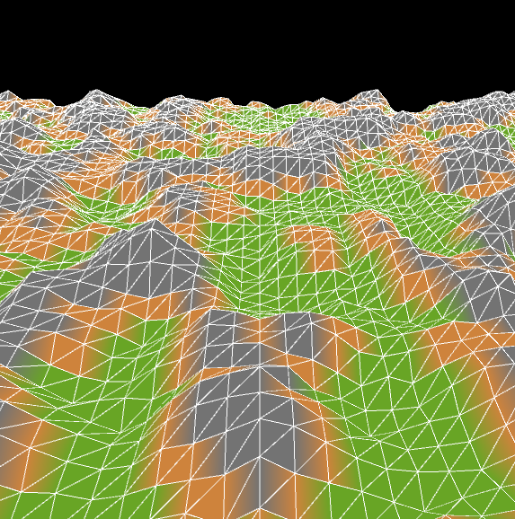
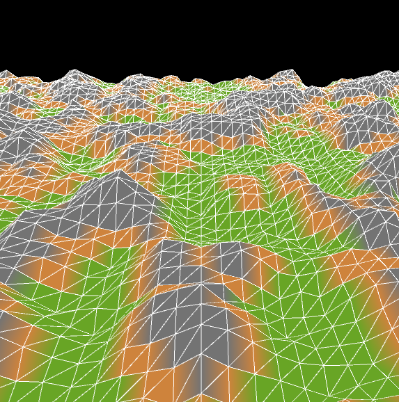
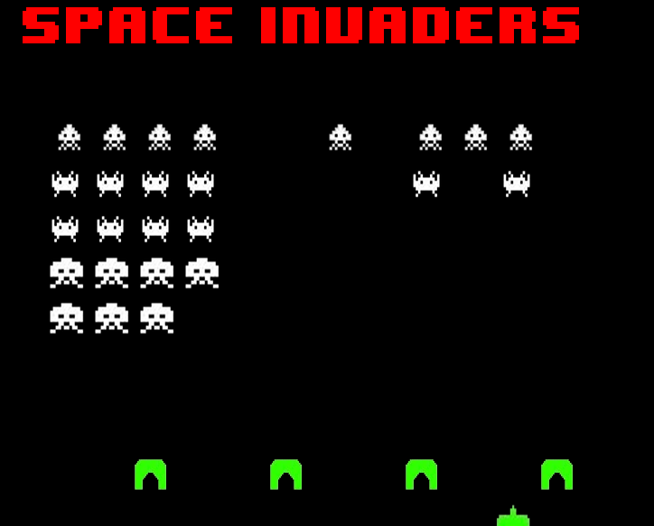

Projects:
TikTok API for Data Science, Refered to as MANGO (Discontinued)
This project, although discontinued, was completed.My intentions for this project was to make a game out of the data that TikTok already collects on the user when they use the app. Information that was gathered by TikTok that I collected was already publicly available, no information that I gathered couldn't already be obtained by using the service.
I want to make it clear that I did not create the API that connected my computer to the TikTok service. I employed the API created by the brilliant David Teather, you can find his work here: Link
What made this project so enjoyable was the efficiency of Teather's API. I could gather 100's of data points spaning multitudes of videos in mere minutes. Part of the code that I wrote with this project even including the algorithim to recognize videos or 'stitches' of videos, so douple-dipping of data wouldn't occur.'
That being said, the reason for the discontinuation of this project was that my original goals could no longer be fulfilled. As I had mentioned prevously, My goal was to make a game around the data associated with TikTok videos. Examples could be guessing which video out of 3 had the most likes, comments, views. Or which video was most likely to become popular within the next week. I had planned to release this game on the Apple Appstore and Googleplay Appstore. When I had started this project in Jaunary of 2022, TikTok's Terms of Service allowed me to pull information, but have since updated it to no longer allow a user to use automated scripts to aquire sensitive information, or reverse engineer, disassemble, or create any derivative products based on TikTok. The last note is what sealed the projects fate, but the first comment is why I am choosing to discontinue the project. I still retain the source code should TikTok's Terms of Service change in the future or privacy rights improve for users. Out of respect towards user's privacy rights and to negate any wrong doings towards TikTok, the project is no longer in development.
I will not be releasing this project to the general public for the reasons stated above. No GUI had been developed so there is not media to show.
3D Perlin Noise with Terrain Assignment
This project was inspired mainly by The Coding Train, where one of his coding chalenges was to create 3D Terrain Generation employing Perlin Noise. You can find the video where he discussed this here: LinkSomthing that fascinated me at the time of the creation of this project (9/18/2018, 14 years old) was how a someone recreated a very basic version of Minecraft within one week! A week! One of the tools he used was 3D Perlin Noise to achieve these ends, having terrain be specificed by the height of the points. So, my achievement here was modifying what The Coding Train had used to create 3D Perlin noise and modified it to generate tiles based on the tile's height. While The Coding Train's program was only black and white, I modified it to add color based on the height of the tile. Although I had originally planned to have objects placed at the tiles height depending on the tile's type (Grass, Ice, Stone, etc.), I never got around to finishing this.
I consider this project complete. You can download the project and see it in action yourself if you so choose. Note that the program will only work for Windows 64 bit systems.
 



Space Invaders
This was mainly a school project where we were free to design a game of our choosing. I choose space invaders, mainly because it's one of my dad's favorite games. The game naturally became one of my favorites, so I wanted to get a shot of recreating it. The game is extremely minimal. There is no score board, and there's only one level with one 'difficulty' level.I did not create the graphics, although I cannot provide where I found the graphics from (I was 14 and had no intention of displaying this project to the public at the time). I am positive however that if you looked for the graphics, you would find them. One thing to note however was that the sound effects and were created by me, althogh they're simple 8 bit sound effects, which fits the style of the game.
I consider this project complete. You can download the project and see it in action yourself if you so choose. Note that the program will only work for Windows 64 bit systems.
